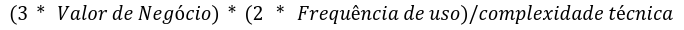

Backlog do Produto
9.1 Backlog Geral
Nosso backlog foi estruturado utilizando histórias de usuário para garantir clareza e foco nas necessidades do negócio e dos usuários finais. As histórias seguem um formato padronizado, começando pela identificação do ator (Como um(a):), o objetivo (Eu quero:) e o benefício esperado (Para que:), assegurando que cada item esteja alinhado com o propósito do sistema. Além disso, cada história inclui critérios de aceitação bem definidos, que detalham os comportamentos esperados, como validações, respostas a falhas, e condições específicas de funcionamento. Esse padrão facilita a priorização, promove um entendimento comum entre os membros do time e stakeholders, e serve como base para validação durante o desenvolvimento, garantindo que as entregas atendam às expectativas de qualidade e funcionalidade.(Caso queira visualizar o backlog completo Veja o quadro do Miro)
RF1 - Titulo: Realizar Login
Como um(a): Dono do Negócio
Eu quero:Realizar um login rápido e seguro no sistema
Para que: Eu confie os meus dados na aplicação
Critérios de aceitação:
1-No caso de alguma falha o usuário deve receber uma resposta do sistema informando qual campo não foi preenchido corretamente.
2-Os dados de entrada que são CPF e senha devem ser conferidos e devem ser únicos por usuário.
3-O sistema deve manter o usuário logado por, no mínimo, 24 horas, a menos que ele escolha explicitamente sair (logout).
4-Ao fazer login com sucesso, o usuário deve ser redirecionado para a página inicial da aplicação, com uma mensagem de boas-vindas.
RF2 - Titulo: Cadastro de Produto
Como um(a): Dono do Negócio
Eu quero:Cadastrar um produto
Para que: Eu adicione novos produtos de forma rápida e prática
Critérios de aceitação:
1-O cadastro do produto deve ser concluído em, no máximo, 3 etapas na interface.
2-O sistema deve permitir que o dono do negócio cadastre um produto informando, no mínimo: nome, quantidade e descrição .
3-O preço deve aceitar apenas valores numéricos positivos, incluindo casas decimais.
4-Deve ser possível representar quantidades fracionadas de algum produto (Meio pacote).
5-Após o cadastro bem-sucedido, o sistema deve exibir uma mensagem de sucesso.
6-Caso algum campo obrigatório esteja ausente ou inválido, o sistema deve exibir uma mensagem clara indicando o problema.
RF3 - Título: Pesquisa de Produto
Como um(a): Dono do Negócio
Eu quero:Pesquisar um produto
Para que: Eu saiba a quantidade dos produtos e possa me planejar
Critérios de aceitação:
1-O sistema deve permitir a pesquisa de produtos pelo nome completo ou parcial.
2-A pesquisa deve ser acionada ao pressionar a tecla "Enter" ou clicar em um botão "Buscar".
3-Caso nenhum produto seja encontrado, o sistema deve exibir a mensagem "Nenhum produto encontrado".
RF4 - Título: Exclusão de Produto
Como um(a): Dono do Negócio
Eu quero:Excluir um produto
Para que: Eu não tenha produtos desnecessários me confundindo na hora de avaliar meu estoque
Critérios de aceitação:
1-O sistema deve exibir uma mensagem de confirmação antes de excluir o produto.
2-A exclusão só deve ocorrer após o usuário confirmar a ação..
O preço deve aceitar apenas valores numéricos positivos, incluindo casas decimais.
3-O botão de exclusão deve ser visível, mas não deve ser facilmente clicado acidentalmente.
4-Após a exclusão do produto, ele não deve mais aparecer na lista de produtos.
RF5 - Título: Atualização de Produto
Como um(a): Dono do Negócio
Eu quero:Atualizar os dados de um produto
Para que: Eu mantenha a quantidade dos produtos correta e não compre nada a mais ou a menos
Critérios de aceitação:
1-O sistema deve permitir que o dono do negócio atualize as informações do produto, incluindo: nome, descrição e quantidade em estoque.
2-A edição deve ser feita a partir de uma lista de produtos, onde cada item tenha a opção "Editar".
3-O sistema deve validar os dados atualizados antes de salvar.
4-Após salvar as alterações, o sistema deve exibir uma mensagem de sucesso
5-Em caso de erro, uma mensagem clara deve ser exibida, indicando o motivo.
6-O formulário de edição deve carregar os dados atuais do produto para facilitar a atualização.
7-Deve haver um botão "Salvar" para confirmar a atualização e um botão "Cancelar" para descartar as alterações.
8-As alterações realizadas devem refletir imediatamente na lista de produtos e no estoque.
RF6 - Título: Ordenar produtos por quantidade
Como um(a): Dono do Negócio
Eu quero: Ordenar produtos por quantidade
Para que: Eu consiga saber quais produtos eu tenha me maior quantidade, facilitando na hora de comprar novos produtos
Critérios de aceitação:
1-O sistema deve permitir ordenar os produtos por quantidade em estoque, tanto em ordem crescente quanto decrescente.
2-A ordenação deve ser acionada através de botões ou opções claramente identificadas.
3-Após aplicar a ordenação, os produtos devem ser exibidos na nova ordem escolhida, sem a necessidade de recarregar a página.
4-O sistema deve manter a ordenação selecionada enquanto o usuário estiver navegando na lista de produtos.
RF7 - Título: Cadastro de Evento
Como um(a): Dono do Negócio
Eu quero: Cadastrar um Evento
Para que: Eu fique ciente dos eventos futuros e possa me organizar
Critérios de aceitação:
1-O sistema deve permitir que o dono do negócio cadastre um evento informando, no mínimo: nome, data, horário, local, quantidade de pessoas e descrição.
2-O cadastro deve ser concluído em até 3 etapas na interface ou em uma única tela.
3-Deve haver um botão "Salvar" para confirmar o cadastro e outro "Cancelar" para descartar as informações.
4-Após salvar, o evento deve ser exibido em uma lista ou calendário na tela principal dos eventos.
5-Após o cadastro bem-sucedido, o sistema deve exibir uma mensagem de confirmação.
6-Em caso de erro, o sistema deve exibir mensagens específicas para cada problema.
RF8 - Titulo: Cadastro de Gastos do evento
Como um(a): Dono do Negócio
Eu quero: Cadastrar os Gastos de um evento
Para que: saiba o quanto eu gastei em um evento, seja com funcionário ou com matéria prima
Critérios de aceitação:
1-O sistema deve permitir que o dono do negócio associe gastos a um evento previamente cadastrado.
2-Para cada gasto, devem ser informados: tipo de gasto (ex.: funcionário, matéria-prima), descrição, valor, e data.
3-O campo "Valor" deve aceitar apenas valores numéricos positivos, com suporte a casas decimais
4-Após o cadastro bem-sucedido, o sistema deve exibir uma mensagem de confirmação.
5-Caso ocorra algum erro, o sistema deve informar claramente o motivo.
RF9 -Título: Cadastro de Ganhos do Evento
Como um(a): Dono do Negócio
Eu quero:Cadastrar os ganhos de um evento
Para que: Eu saiba o quanto eu vendi e possa avaliar a efetividade do evento
Critérios de aceitação:
1-O sistema deve permitir que o dono do negócio registre os ganhos relacionados a um evento específico.
2-Para cada ganho, o sistema deve solicitar: descrição do ganho (ex.: vendas de ingressos, vendas de produtos), valor arrecadado e data.
3-O campo "Valor" deve aceitar apenas valores numéricos positivos, com suporte a casas decimais.
4-Após o cadastro bem-sucedido, o sistema deve exibir uma mensagem de confirmação.
5-Caso ocorra algum erro, o sistema deve informar claramente o motivo.
RF10 - Título: Gerar Relatório Referente aos Ganhos e Gastos do evento
Como um(a): Dono do Negócio
Eu quero: Gerar relatórios sobre os ganhos e gastos dos eventos
Para que: Eu possa avaliar a lucratividade e tomar decisões estratégicas
Critérios de aceitação:
1-O sistema deve gerar relatórios detalhados contendo:Nome do evento,Total de ganhos, Total de gastos, Balanço final (lucro ou prejuízo), Lista detalhada de ganhos e gastos, incluindo data, descrição e valores.
2-O relatório deve ser exibido na tela em um formato organizado e fácil de visualizar (ex.: tabelas ou gráficos).
3-O sistema deve destacar o balanço final (lucro ou prejuízo) de forma clara, com cores diferenciadas (ex.: verde para lucro, vermelho para prejuízo).
4-O sistema deve permitir a exportação do relatório nos formatos PDF e Excel.
5-Após a geração, o relatório deve ser armazenado na interface do sistema para consulta posterior.
RF11 - Título: Pesquisar Eventos Passados
Como um(a): Dono do Negócio
Eu quero: Pesquisar eventos passados
Para que: Eu possa acessar informações relevantes e relacionados a eventos passados
Critérios de aceitação:
1-O sistema deve permitir que o dono do negócio pesquise eventos passados usando tanto nome como períodos ou datas.
2-A lista de resultados deve exibir: nome, data, local do evento, relatório financeiro (se disponível).
3-A interface deve indicar claramente quando nenhum evento correspondente for encontrado
RF12 - Título: Pesquisar Eventos Futuros
Como um(a): Dono do Negócio
Eu quero: Pesquisar eventos futuros
Para que: Eu possa acessar informações relevantes e planejar melhor as ações relacionadas aos próximos eventos.
Critérios de aceitação:
1-O sistema deve permitir que o dono do negócio pesquise eventos futuros usando tanto nome como períodos ou datas.
2-A lista de resultados deve exibir: nome, data, local do evento.
3-A interface deve indicar claramente quando nenhum evento correspondente for encontrado
RF13 - Título: Atualizar dados dos eventos
Como um(a): Dono do Negócio
Eu quero: Atualizar os dados de eventos cadastrados
Para que: Eu possa corrigir informações ou refletir alterações no planejamento
Critérios de aceitação:
1-O sistema deve permitir que o dono do negócio atualize as seguintes informações de um evento: nome, data , local, horário, quantidade de pessoas, gastos e ganhos.
2-Deve haver um botão ou link "Editar" ao lado de cada evento listado.
3-O formulário de edição deve exibir os dados atuais do evento, permitindo alterações em campos específicos.
4-O sistema deve validar as informações atualizadas antes de salvar.
5-Após salvar as alterações, o sistema deve exibir uma mensagem de sucesso
6-Se o usuário cancelar a edição, o sistema deve descartar as alterações e manter os dados originais intactos.
RF14 - Título: Cadastro de Funcionário
Como um(a): Dono do Negócio
Eu quero: Cadastrar novos funcionários no sistema
Para que: Eu possa gerenciar informações da equipe com eficiência
Critérios de aceitação:
1-O sistema deve permitir que o dono do negócio cadastre novos funcionários preenchendo os seguintes campos obrigatórios: Nome, telefone de contato.
2-O sistema deve permitir que o dono do negócio avalie os funcionários de uma forma simples o desempenho e a pontualidade dos funcionários
3-Após o cadastro, o sistema deve exibir uma mensagem de sucesso.
4-Caso ocorra um erro, o sistema deve exibir uma mensagem clara com a razão do erro.
5-As informações cadastradas devem ser armazenadas corretamente no banco de dados, garantindo a integridade e disponibilidade dos dados.
6-O sistema deve impedir o cadastro de funcionários com informações incompletas ou incorretas.
RF15 - Título: Excluir funcionário
Como um(a): Dono do Negócio
Eu quero: Excluir funcionários que não fazem mais parte da empresa
Para que: Eu possa manter o cadastro atualizado
Critérios de aceitação:
1-O sistema deve permitir que o dono do negócio exclua um funcionário selecionado na lista de funcionários cadastrados.
2-Antes de excluir, o sistema deve exibir uma mensagem de confirmação.
3-Deve haver botões de confirmação e cancelamento claramente identificados.
4-O sistema não deve permitir a exclusão de funcionários vinculados a eventos futuros.
5-Caso o funcionário não possa ser excluído, o sistema deve exibir uma mensagem clara explicando o por que.
6-Após uma exclusão bem-sucedida, o sistema deve exibir uma mensagem de confirmação.
RF16 - Título: Atualizar dados dos funcionários
Como um(a): Dono do Negócio
Eu quero: Atualizar as informações dos funcionários
Para que: Eu possa corrigir dados ou adicionar novas informações relevantes.
Critérios de aceitação:
1-O sistema deve permitir que o dono do negócio edite as informações de um funcionário previamente cadastrado.
2-O sistema deve permitir a atualização de todos os dados e das avaliações do funcionário.
3-O sistema deve validar os dados atualizados.
4-Após salvar as alterações, o sistema deve exibir uma mensagem de sucesso.
5-Caso ocorra um erro, deve ser exibida uma mensagem clara com o motivo do erro.
6-O sistema deve exibir um botão ou link claramente identificado como "Editar" ao lado de cada funcionário na lista.
RF17 - Título: Registro de Pagamento de funcionário
Como um(a): Dono do Negócio
Eu quero: Registrar pagamentos de funcionários
Para que: Eu possa controlar as finanças e garantir o histórico de pagamentos.
Critérios de aceitação:
1-O sistema deve permitir que o dono do negócio registre pagamentos realizados para cada funcionário.
2-O sistema deve validar o valor do pagamento, apenas valores positivos decimais ou não.
3-Após registrar o pagamento, o sistema deve exibir uma mensagem de sucesso.
4-Caso ocorra um erro, deve ser exibida uma mensagem clara com o motivo do erro.
5-O sistema deve permitir que o usuário visualize uma lista de pagamentos realizados, pesquisando por nome ou data.
RF18 - Título: Pesquisar Funcionário
Como um(a): Dono do Negócio
Eu quero: Pesquisar informações de funcionários no sistema
Para que: Eu possa acessar dados rapidamente quando necessário
Critérios de aceitação:
1-O sistema deve permitir que o dono do negócio pesquise informações de funcionários cadastrados utilizando diferentes critérios.
2-A pesquisa deve aceitar os seguintes parâmetros: nome, telefone de contato, desempenho e pontualidade.
3-O sistema deve exibir uma lista com os funcionários que correspondem aos critérios de busca.
4-Se nenhum funcionário for encontrado, o sistema deve exibir uma mensagem.
5-Caso ocorra um erro, deve ser exibida uma mensagem clara com o motivo do erro.
9.2 Priorização
Aqui está a fórmula usada para a priorização dos requisitos, com foco em valorizar significativamente a frequência de uso.

RF1 - Titulo: Realizar Login
Valor de Negócio: 5
Complexidade Técnica: 4
Frequência de Uso: 1
Prioridade: 7,5
RF2 - Titulo: Cadastro de Produto
Valor de Negócio: 5
Complexidade Técnica: 2
Frequência de Uso: 3
Prioridade: 45
RF3 - Título: Pesquisa de Produto
Valor de Negócio: 5
Dificuldade técnica: 3
Frequência de Uso: 3
Prioridade: 30
RF4 - Título: Exclusão de Produto
Valor de Negócio: 3
Complexidade Técnica: 3
Frequência de Uso: 2
Prioridade: 12
RF5 - Título: Atualização de Produto
Valor de Negócio: 5
Complexidade Técnica: 2
Frequência de Uso: 2
Prioridade: 30
RF6 - Título: Ordenar produtos por quantidade
Valor de negócio: 5
Complexidade Técnica: 3
Frequência de Uso: 1
Prioridade: 10
RF7 - Título: Cadastro de Evento
Valor de negócio: 5
Dificuldade técnica: 2
Frequência de Uso: 2
Prioridade: 30
RF8 - Titulo: Cadastro de Gastos do evento
Valor de negócio: 5
Dificuldade técnica: 2
Frequência de Uso: 2
Prioridade:30
RF9 -Título: Cadastro de Ganhos do Evento
Valor de Negócio: 5
Complexidade Técnica: 2
frequência de uso: 2
Prioridade: 20
RF10 - Título: Gerar Relatório Referente aos Ganhos e Gastos do evento
Valor de Negócio: 5
Complexidade Técnica:2
frequência de uso: 2
Prioridade: 30
RF11 - Título: Pesquisar Eventos Passados
Valor de Negócio:5
Complexidade Técnica:2
frequência de uso: 3
Prioridade: 45
RF12 - Título: Pesquisar Eventos Futuros
Valor de Negócio:5
Complexidade Técnica:3
frequência de uso: 3
Prioridade: 30
RF13 - Título: Atualizar dados dos eventos
Valor de Negócio:5
Complexidade Técnica:2
frequência de uso: 2
Prioridade: 30
RF14 - Título: Cadastro de Funcionário
Valor de Negócio:5
Complexidade Técnica:1
frequência de uso:1
Prioridade: 30
RF15 - Título: Excluir funcionário
Valor de Negócio: 4
Complexidade técnica:1
frequência de uso: 1
Prioridade: 24
RF16 - Título: Atualizar dados dos funcionários
Valor de Negócio:5
Complexidade Técnica:1
Frequência de Uso: 1
Prioridade: 30
RF17 - Título: Registro de Pagamento de funcionário
Valor de Negócio:5
Complexidade Técnica:2
Frequência de Uso: 1
Prioridade: 15
RF18 - Título: Pesquisar Funcionário
Valor de Negócio:5
Complexidade Técnica:2
Frequência de Uso: 1
Prioridade: 30
9.3 MVP
Com base na priorização feita e visando entregar maior valor para o cliente nosso mvp será composto dos seguintes requisitos:
RF2 - Titulo: Cadastro de Produto
RF12 - Título: Pesquisar Eventos Futuros
RF11 - Título: Pesquisar Eventos Passados
RF3 - Título: Pesquisa de Produto
RF5 - Título: Atualização de Produto
RF10 - Título: Gerar Relatório Referente aos Ganhos e Gastos do evento
RF13 - Título: Atualizar dados dos eventos
RF14 - Título: Cadastro de Funcionário
RF15 - Título: Excluir funcionário
RF17 - Título: Registro de Pagamento de funcionário
RF7 - Título: Cadastro de Evento
RF8 - Titulo: Cadastro de Gastos do evento
RF9 -Título: Cadastro de Ganhos do Evento
RF16 - Título: Atualizar dados dos funcionários
- Possiveis incrementos
RF16 - Título: Atualizar dados dos funcionários
RF4 - Título: Exclusão de Produto
RF6 - Título: Ordenar produtos por quantidade
RF18 - Título: Pesquisar Funcionário
RF1 - Titulo: Realizar Login
Histórico de Revisão*
| Data | Versão | Descrição | Autor |
|---|---|---|---|
| 16/12/2024 | 1.0 | Criação do documento | Pedro Gois |